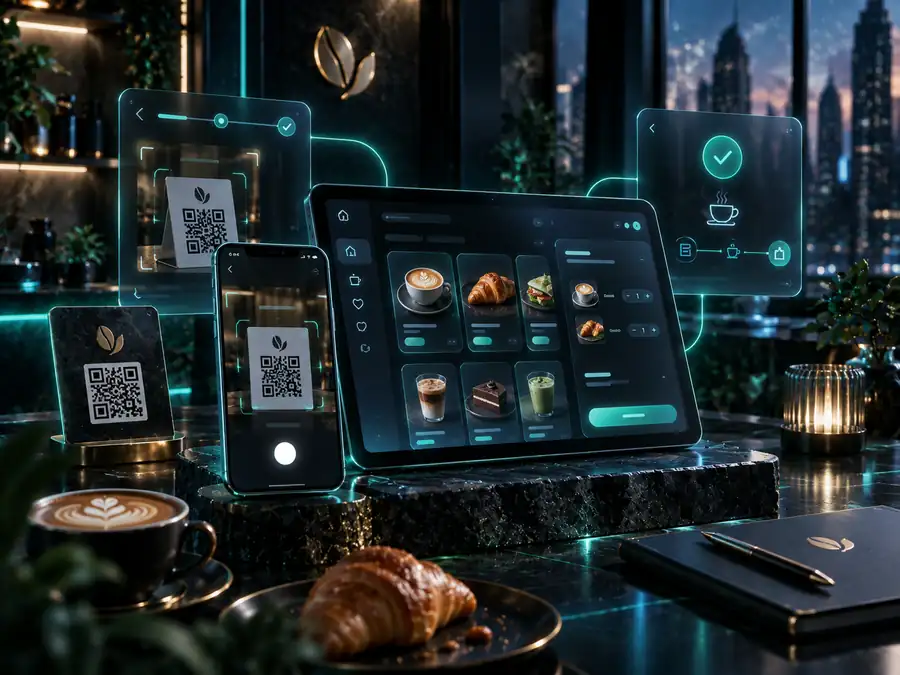

Flagship platform
Live
MyFastOffer4U
A UK property seller platform combining content discovery, lead capture, referral workflows, analytics, technical SEO, location pages, and operational tooling around seller problems.
Conversion-focused frontend
Lead & consent flows
Partner referral workflow
Analytics + SEO infrastructure
HTML · CSS · JavaScript · WordPress · REST APIs · GA4 · Search Console · SEO · GitHub Actions
Concept visualProduct · Leads · Analytics
Marketplace product
Live
Concept visual
MarocVows
A multilingual Moroccan wedding discovery product designed around provider listings, city discovery, local search, user trust, and a future review marketplace.
Marketplace UX
Multilingual architecture
Local SEO
HTML · CSS · JavaScript · GitHub Pages · DNS · SEO
Full-stack web app
Private build

Concept visual
HUG Cafe QR Ordering
A mobile-first ordering system with QR table access, menu categories, cart state, customer names, order confirmation, admin controls, payment status, and menu import workflows.
QR ordering
Admin dashboard
State + data flows
Next.js · TypeScript · Tailwind · Responsive UX · Admin workflows · CSV import
Consumer platform
Live
FR
MyFastOffer4U France
A France-focused consumer guidance product with localized UX, recurring-cost analysis, analytics scoping, subscription logic, and content architecture.
Localized product
Analytics
Subscription logic
Frontend · Analytics · Consumer UX · Localization · SEO
Automation system
In development
AI
Content Automation Engine
A modular system for planning, generating, reviewing, organizing, and distributing content with AI-assisted steps, APIs, containers, and automation workflows.
Workflow orchestration
Human review loop
Multi-platform logic
n8n · Docker · APIs · AI workflows · Automation